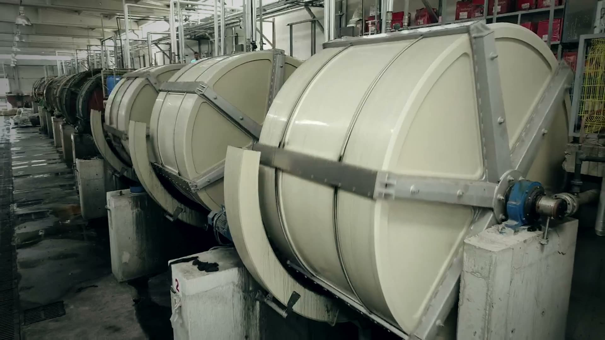

Configureren, een offerte, of alleen zeggen wat je vervoert. Welke deur je ook neemt, er kijkt een casebouwer naar voordat er gezaagd wordt.
Een schets, een datasheet of een foto van je apparatuur. Je krijgt dezelfde werkdag een tekening met prijs terug.
Model en maten zijn bekend. Vijf stappen, prijs meteen in beeld, geen wachttijd.
Een Les Paul, een 19-inch rack van 6 HE, een moving head. Zeg wat erin gaat, wij bepalen de maten.
Dezelfde werkplaats, dezelfde tolerantie, of je er nu één bestelt of een seizoen vooruit inkoopt. Wat er verandert is de prijs per stuk en het moment van leveren — niet de kist.
“Wij bestellen per seizoen zeventig kisten. Dat het bedrag er meteen staat, scheelt ons een week heen-en-weer per bestelling.”
// citaat nog op te halen · plaatsvervangende tekstGeen minimum, geen account, geen offertetraject. Dezelfde kist als die driehonderd, alleen dan één keer.
Profielen, hoeken, sluitingen, wielen en schuim — hetzelfde materiaal waarmee wij bouwen. Vandaag besteld, morgen verstuurd.
Een foto van je apparatuur is genoeg om te beginnen. Je hebt vandaag nog een tekening, en pas als die klopt praten we over bestellen.
Vraag je case aan →